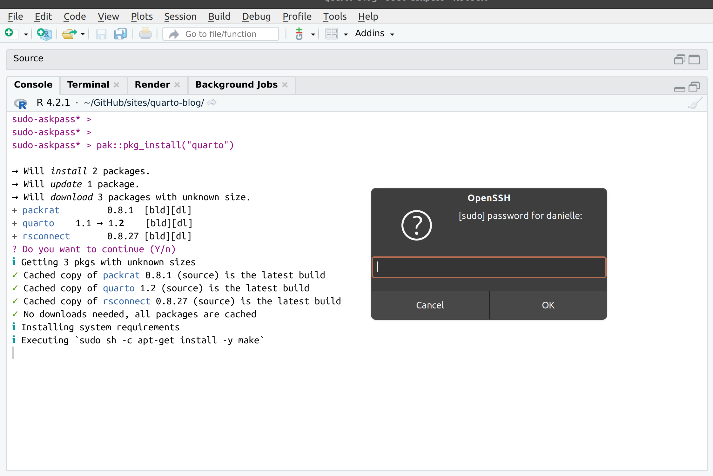

![]()
pak::pkg_install("quarto")One peculiar feature of earning one’s keep in society by writing a data science blog is that it provides the opportunity to be unabashedly weird. Personality is important. Other developers will read your strange content – no matter how weird and unprofessional it is – because professional corporate style is very nearly as dull as academic writing, and it is a relief to learn a new thing from an actual human being who write with a certain level of human character.
Even if she is an irredeemably catty bitch.
All of which is by way of preamble, and a way to acknowlege that when the topic is package dependencies in R, the queer double entendres kind of write themselves.1 And so without further ado, today’s unhinged rambling…
Managing package dependencies in R
Okay so you’ve done your due diligence. You’ve read his pkgdown site, checked out his repo, and you still like him. You really, really want to install his package. You’ve inspected the documentation and it is a very impressive package. I mean, I get it babe.
I. have. been. there.
There’s a thing with packages though. When you’re installing them into wherever you like to put packages (the precise location doesn’t matter for this post2), what you see isn’t necessarily all you get.
I’ll give a concrete example. For reasons unknown even to me I woke up this morning and decided today was the day I’d explore the rig installation manager for R that lets you manage multiple R installations on the one machine. It’s very nice, and possibly the topic for a future post. However, one side consequence to adopting rig is that I ended up with adorably fresh copies of R that had no installed packages and needed to be properly set up. In the process, I started thinking a little about the tools I use to install packages. When I first started using R my go to method was to use the install.packages() function supplied by the utils package: after all, it comes bundled with R, which makes it an easy place to start. As I matured as an R user I found myself switching to the remotes package because it provides a coherent set of functions for installing packages from CRAN, Bioconductor, GitHub, and more. I’m a huge fan of remotes, but for reasons I’ll explain in a moment I’m starting to prefer the pak package developed by Gábor Csárdi and Jim Hester. When using pak, the function you use to install packages is called pkg_install(). I’ll walk you through it. Here’s what happens when I try to install the quarto R package without properly configuring my setup. First I call the function:
When I hit enter, pak starts doing its job, resolving the R dependencies and then asking if I want to continue:
✓ Loading metadata database ... done
→ Will install 2 packages.
→ Will update 1 package.
→ Will download 3 packages with unknown size.
+ packrat 0.8.1 [bld][dl]
+ quarto 1.1 → 1.2 [bld][dl]
+ rsconnect 0.8.27 [bld][dl]
? Do you want to continue (Y/n) I really like this approach. The interface is very clear about precisely what is happening, and pak doesn’t download any more packages than is absolutely necessary to give you what you asked for (unless you specify upgrade = TRUE in the install command).
I agree to continue, so off pak goes, fetching the appropriate R packages:
ℹ Getting 3 pkgs with unknown sizes
✓ Got quarto 1.2 (source) (67.58 kB)
✓ Got rsconnect 0.8.27 (source) (685.57 kB)
✓ Got packrat 0.8.1 (source) (681.50 kB)
✓ Downloaded 3 packages (1.43 MB)in 6.7sSo far, so good. The output is informative and succinct at the same time. It appeals to my aesthetic sensibilities. But then pak – which is very diligent about managing all dependencies including system dependencies – attempts to install the external libraries upon which quarto depends,3 and this happens:
ℹ Installing system requirements
ℹ Executing `sudo sh -c apt-get install -y make`
Error: System command 'sudo' failed, exit status: 1, stdout + stderr:
E> sudo: a terminal is required to read the password; either use the -S option to read from standard input or configure an askpass helperAh.
What went wrong here?
An important thing to understand here is that neither pak nor sudo are to blame for the installation failure.4 On the pak side, it’s a good thing that it tries to uncover and install system dependencies: the package isn’t going to work if you don’t have those dependencies installed, and it can be a nightmare trying to track them all down when the package manager doesn’t help identify them for you.5 On the sudo side, it is extremely reasonable to expect the user to authenticate before enabling superuser privileges. Speaking for myself, I have a very strong expectation that I will be explicitly asked for my consent before packages are installed on my system.6
The breakdown happens because pak has invoked sudo outside of the terminal context. If you haven’t configured sudo to handle this situation, there’s no opportunity for the user to authenticate, and sudo throws an error.
How can we resolve this?
Configuring sudo
A little bit of digging revealed that sudo is a lot more configurable than I had preciously realised, and you can deal with this issue in a few different ways. One possibility would be to enable passwordless sudo, in which case the system dependencies would be installed without requiring a password at all. That would certainly minimise the amount of hassle at my end, but it’s also a hell of a security risk. Even if I personally felt willing to take that risk with my own property, this is a work laptop and I think a little risk-aversion is a good idea in this case.7
Fortunately, the error message itself contains some hints that there is an alternative fix that doesn’t require you to weaken your security settings (or not by very much, at any rate). Specifically, the error message refers to an “askpass helper”: a program, usually with a GUI, that sudo will invoke whenever it needs authentication from the user but is not running in a terminal. However, in order to get sudo to invoke one of these helpers, you have to explicitly configure it within the sudo configuration file, sudo.conf. This configuration file is located at /etc/sudo.conf is discussed pretty thoroughly in the sudo help documentation. Here’s the relevant part of the output when I type man sudo.conf:8
askpass The fully qualified path to a helper program used to read the
user's password when no terminal is available. This may be
the case when sudo is executed from a graphical (as opposed to
text-based) application. The program specified by askpass
should display the argument passed to it as the prompt and
write the user's password to the standard output. The value
of askpass may be overridden by the SUDO_ASKPASS environment
variable.Okay, so I need to do two things. I need to edit sudo.conf to configure sudo to use the askpass helper, and I also need the askpass helper itself. So where do I find one of these askpass helper programs? The one I chose to go with is ssh-askpass, which I installed on my system using the following:
sudo apt-get install ssh-askpass ssh-askpass-gnomeNotice that I installed both ssh-askpass and ssh-askpass-gnome. The latter isn’t the askpass helper itself, and isn’t intended to be invoked separately from ssh-askpass. Rather it’s there because ssh-askpass on its own uses X11 to do the graphical user interface part and it’s not very pretty on my Ubuntu installation. By installing ssh-askpass-gnome as well, the dialog box that comes up when ssh-askpass is invoked is much nicer.
At the terminal, I can invoke ssh-askpass manually if I want to. It doesn’t do much by itself: all it does is create the dialog box and return the text input by the user.
ssh-askpassIn practice you don’t actually call this directly. Instead, you configure sudo to that whenever it needs authentication but doesn’t have access to a terminal. In order to accomplish this, here’s the lines I added to my sudo.conf file:9
# specify ssh-askpass as my helper
Path askpass /usr/bin/ssh-askpassSo I did this and then10 tried to install quarto using pkg_install(). This time around sudo no longer errored when pak tried to install system dependencies. Instead it brought up the askpass dialog box:

When I typed in my password, pak and sudo were able to play nicely together and the installation worked just fine. Well, mostly..
Can we relax just a little sweetie?
The only problem is that quarto installation requires five system dependencies to be installed, and as the output below shows, pak starts a new shell process every single time…
ℹ Executing `sudo sh -c apt-get install -y make`
ℹ Executing `sudo sh -c apt-get install -y libcurl4-openssl-dev`
ℹ Executing `sudo sh -c apt-get install -y libicu-dev`
ℹ Executing `sudo sh -c apt-get install -y libssl-dev`
ℹ Executing `sudo sh -c apt-get install -y pandoc`…and as a consequence of this I had to enter my password five times.
That’s mildly irritating, and I was not expecting it. My original assumption would be that entering the password the first time would invoke the sudo password cache: that is, after entering my password once, the elevated permissions11 would persist for about 15 minutes. That’s what happens by default at the terminal, and I had presumed the same would apply when the call to sudo occurs within an R session. However, that’s not quite accurate. This little gem in man sudo explains the relevant security policy issue:
Security policies may support credential caching to allow the
user to run sudo again for a period of time without requiring
authentication. By default, the sudoers policy caches creden‐
tials on a per-terminal basis for 15 minutes. See the
timestamp_type and timestamp_timeout options in sudoers(5) for
more information. By running sudo with the -v option, a user
can update the cached credentials without running a command.
The reason why the “15 minutes” rule doesn’t apply here is that the credentials are cached on a “per-terminal” basis. Each sudo sh command invoked by pak effectively runs a new instance of the shell and the password caching doesn’t transfer. Gr.
Editing the sudoers file
As a general rule I can understand why sudo is conservative and does not permit the credential cache to transfer across processes. Who knows what other processes are running and what they might be doing? But in this instance I’m willing to slightly relax the security policy to ensure that the pak/sudo combination doesn’t drive me crazy by relentlessly asking for permission on every little thing.
The security policies in sudo are managed by plugins12 configured using the “sudoers” file(s) located at /etc/sudoers. I’ll talk about this file momentarily, but first here’s the relevant extract from man sudoers that tells us what setting we need to modify:
timestamp_type sudoers uses per-user time stamp files for
credential caching. The timestamp_type op‐
tion can be used to specify the type of time
stamp record used. It has the following
possible values:
global A single time stamp record is used
for all of a user's login sessions,
regardless of the terminal or parent
process ID. An additional record is
used to serialize password prompts
when sudo is used multiple times in
a pipeline, but this does not affect
authentication.
ppid A single time stamp record is used
for all processes with the same par‐
ent process ID (usually the shell).
Commands run from the same shell (or
other common parent process) will
not require a password for
timestamp_timeout minutes (15 by
default). Commands run via sudo
with a different parent process ID,
for example from a shell script,
will be authenticated separately.
tty One time stamp record is used for
each terminal, which means that a
user's login sessions are authenti‐
cated separately. If no terminal is
present, the behavior is the same as
ppid. Commands run from the same
terminal will not require a password
for timestamp_timeout minutes (15 by
default).
kernel The time stamp is stored in the ker‐
nel as an attribute of the terminal
device. If no terminal is present,
the behavior is the same as ppid.
Negative timestamp_timeout values
are not supported and positive val‐
ues are limited to a maximum of 60
minutes. This is currently only
supported on OpenBSD.
The default value is tty.
This setting is only supported by version
1.8.21 or higher.
This documentation makes clear where the problem lies. When pak invokes sudo, a new process is spawned and unless the value of timestamp_type is set to global, the sudo credential cache doesn’t get shared across processes.
It’s possible to modify this setting, and I’ll show you how to do that below, but first I strongly recommend that you read this article on how to edit the sudoers file carefully. For realsies, my dears, read it. Editing policies for sudo needs to be done with a lot of care. You don’t want to mess it up and lose the ability to invoke sudo because it’s been incorrectly configured. So please, please read the linked page.
You read it, right?
Good.
After reading through the linked article, I made the decision that instead of editing the main sudoers file, I would instead add a small file to the /etc/sudoers.d/ directory. By default, files in this folder are automatically included when the sudoers plugin is loaded, so it’s a convenient place to add your customisations rather than editing the main file. I created one that exists solely to manage the timestamp settings for my primary user:
sudo visudo -f /etc/sudoers.d/timestamp_typeNotice that I’ve used visudo, and not some other editor. If you read the linked article you know why I did that, and why it is astonishingly important to do it this way in order to practice safe sudo13 policy editing. If you didn’t read the linked article… well, you would be extremely ill-advised to try the next step without actually reading it.
Okay, that feels like enough warning. Let’s look at what I included in my new /etc/sudoers.d/timestamp_type file:
# specify the timeout type (usual default=tty)
Defaults:danielle timestamp_type=global
# specify the timeout interval (usual default=15)
Defaults:danielle timestamp_timeout=2I’ve done two things. First, in order to allow the sudo password cache to work everywhere regardless of which process invokes it, I set timestamp_type=global. Second, because this makes me a tiny bit nervous (it’s a very mild softening of security policies), I shortened the cache expiry time from 15 minutes to 2 minutes by setting timestamp_timeout=2. In practice, I very rarely do anything requiring superuser privileges that requires more than two minutes, and it seems best to let those privileges expire quickly.
You’re a star
At this point I have a set up that lets me use pak without needing to weaken my security policies (well, not by much) and won’t cause me to lose my mind by typing in my password over and over until I beg for the sweet release14 of death. Was it all worth it?
Well, let me just say this: out of curiosity I decided to try installing the stars package, which necessarily entails installing a lot of geospatial dependencies. Back when I first tried installing these tools on linux a couple of years ago it was a nightmare. I had to track down the dependencies myself and manually install them, which was pretty daunting at the time because I was very new to the whole business.15 Here’s what happened when I tried it with pak after configuring sudo to ask for my password only the once:
pak::pkg_install("stars")→ Will install 1 package.
→ Will download 1 package with unknown size.
+ stars 0.5-6 [bld][dl]
ℹ Getting 1 pkg with unknown size
✓ Got stars 0.5-6 (source) (3.42 MB)
✓ Downloaded 1 package (3.42 MB)in 4.2s
ℹ Installing system requirements
ℹ Executing `sudo sh -c apt-get install -y libgdal-dev`
ℹ Executing `sudo sh -c apt-get install -y gdal-bin`
ℹ Executing `sudo sh -c apt-get install -y libgeos-dev`
ℹ Executing `sudo sh -c apt-get install -y libssl-dev`
ℹ Executing `sudo sh -c apt-get install -y libproj-dev`
ℹ Executing `sudo sh -c apt-get install -y libudunits2-dev`
ℹ Building stars 0.5-6
✓ Built stars 0.5-6 (1.4s)
✓ Installed stars 0.5-6 (98ms)
✓ 1 pkg + 16 deps: kept 12, added 1, dld 1 (3.42 MB) [20.7s] One line of code. One line of code, that worked the first time. One line of code that worked the first time and installed everything quickly. It’s a true Christmas miracle.
Footnotes
Like so many moments in life when I get this way, Dan Simpson is at least partially to blame.↩︎
Per Lawrence v Texas.↩︎
It took all the self-restraint I possess not to refer to this as “the undisclosed viagra problem” in the title. Footnotes are the place for such things Danielle. Footnotes.↩︎
These things happen to everyone sometimes honey, it’s no big deal, etc.↩︎
Conveniently, pak also allows you to identify these dependencies separately from the R package installation. To do this, use the
pkg_system_requirements()function.↩︎There’s an unpleasant name for people who break that convention, and I can’t think of a joke for this one because it’s astonishingly horrible. If you don’t know from personal experience what it feels like, well, consider yourself fortunate. Sigh.↩︎
Okay sure, I haven’t technically asked DevOps for their opinion about the possibility of me dumping the authentication requirements on superuser privileges on a work machine. Nevertheless I do have a suspicion I know what their answer would be. So, in the interests of not causing unnecessary distress, perhaps a different approach is in order…↩︎
The manual page is online at the linked URL.↩︎
In the interests of strict accuracy, I should add that had to create this file myself because it didn’t already exist on my system: prior to making this edit, sudo was using all the default settings. Relatedly, I had to use
whereis ssh-askpassin order to find the path to ssh-askpass because the advice I’d seen online listed a different path and, shockingly, it doesn’t work if you don’t provide the correct path.↩︎After restarting R, just in case.↩︎
Negotiations are vital and CNC isn’t for newbies.↩︎
With flared bases one hopes.↩︎
Surely you cannot have expected me to pass up the opportunity to make a safe sudo joke?↩︎
Nah, too obvious. Feel free to come up with your own joke here, you don’t need my help.↩︎
We all were at one time.↩︎
Reuse
Citation
BibTeX citation:
@online{navarro2022,
author = {Navarro, Danielle},
title = {Sudo Ask Me a Password},
date = {2022-09-04},
url = {https://blog.djnavarro.net/posts/2022-09-04_sudo-askpass},
langid = {en}
}
For attribution, please cite this work as: